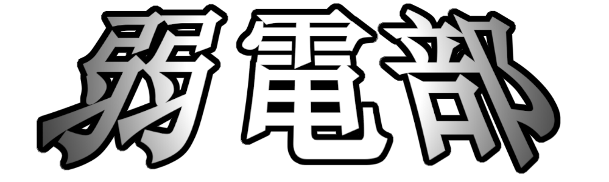

メニュー
トップページ
今年のゲーム
使用ソフト
ダウンロード
リンク
東邦高校ホームページ
弱電部Twitter
Youtubeチャンネル
部活紹介
東邦大学付属東邦高校
の部活です
WECとは
Weak
Electric
Club
弱
電
部
の略称
活動内容
・ゲーム制作
・電子工作
目標
基本、発表の場は文化祭展示だけなので
文科系部活動企画王入賞
を目標にしています！
紹介動画
東邦高校の所在地
Twitter
弱電部公式Twitter